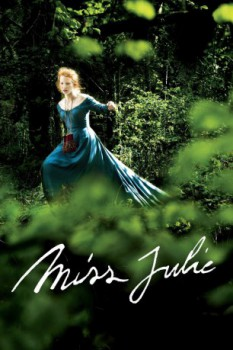

Miss Julie (2014)


Love is a foolish game

País:Reino Unido, 130 minutos.
Idiomas:Inglés
GénerosDrama, Romántica
Director/es:Liv Ullmann
Guionistas:Liv Ullmann
Códec de vídeo:Unknown
Número: 2576
TomatoMeter:

--

--
Clasificación IMDb:


5.5/10 (6.4K votos)
Certificación:
Argumento:
Over the course of a midsummer night in Fermanagh in 1890, an unsettled daughter of the Anglo-Irish aristocracy encourages her father's valet to seduce her.
Reparto
Jessica Chastain (Como Miss Julie), Colin Farrell (Como John), Samantha Morton (Como Kathleen), Nora McMenamy (Como Little Miss Julie)
Medio: Archivo de video,
Localización: D:\PELICULAS\ACTORES\Colin Farrell\Miss Julie (La señorita Julia) (2015)\Miss Julie (La señorita Julia) (2015).avi
Prestado: No
Rel. aspecto: Unknown